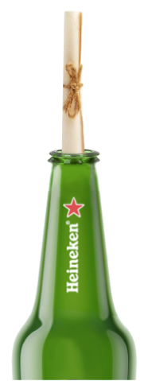
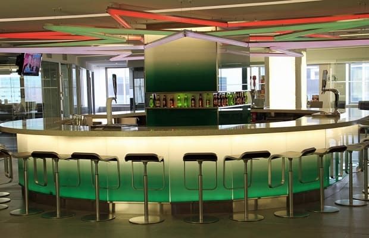
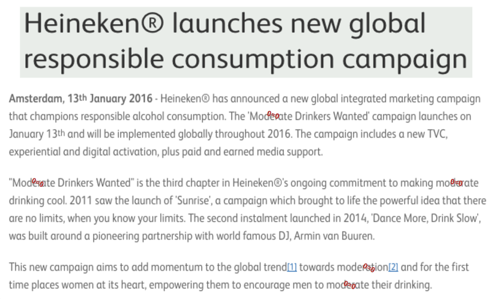

| We uncovered some staggering research: drunk driving fatalies were down 50% since 1980 due to the combined efforts of various industries and brands. However, since 2011 the number of these fatalities plateaued to around 10,000 each year, meaning our efforts were becoming ineffective. Additionally, 296,000 drunk drivers go undetected everyday and will drive under the influence 300 times before facing the consequences.
After doing primary research to confirm our suspicious regarding this risky behavior, our insight became clear: The ambiguity of the “Drink Responsibly” and "Drink in Moderation” messaging allows millennials to justify and internally negotiate with themselves the choice to operate a vehicle after consuming alcohol. |
| We developed a one-year integrated marketing campaign with a clear message - there is no negotiation; when you drink, you cannot drive, and the idea to replace ambiguity with clarity. |
 |
 |
Drink Responsibly messaging, and vandalizing them a week later to generate WOM and earned media. |
 |
 |
the company's own doing to put an end to the ambiguity and replace it with Zero=Zero messaging. |
an email from him announcing HUSA's new stance on Drink or Drive through an internal chain letter that challenges them to circulate it internally within 48 hours. |
|
 |
 |
will be sent a 6-pack of Heineken beer, with one bottle containing an invitation to a media-only happy hour. |
 |
the launch of the campaign in a track-changed format to imitate vandalizing ambigious drinking and driving language. A blurb explaning the purpose of sending out a "vandalized" press release will be included. |
|
|
Contact me with any questions or comments. |
| dalis@galv.co | /in/dbgalvez | ||
| 646.427.4787 | @dbgalvez |